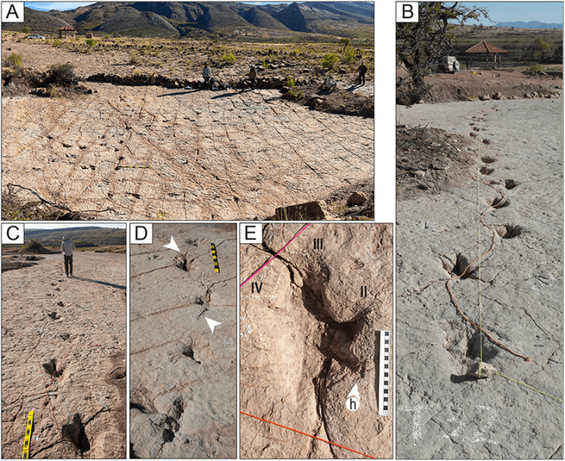

Dinosaur tracks always make a stir. Fossilized traces of animals that dominated ecosystems long before humans made their appearance on Earth, they’re literally footprints from the deep past.
Now, researchers have published findings in PLOS One that detail their discovery of a new world record for the number of individual dino tracks, continuous trackways, tail traces, and swimming traces.
“It’s amazing working at this site, because everywhere you look, the ground is covered in dinosaur tracks,” said the lead study author, paleontologist Raúl Esperante of the California-based Geoscience Research Institute, in a statement.
Esperante and colleagues from the United States and Bolivia documented more than 16,000 tracks left by dinosaurs across nine study sites in the Carreras Pampa, Bolivia. Nestled in Torotoro National Park, the study sites are part of a vast exposed area of more than 80,000 square feet, akin to 1.5 football fields. The layer of rock dates to the Upper Cretaceous Period before the cataclysmic asteroid collision that ended the reign of the dinosaurs about 66 million years ago.

LEAVE NOTHING BUT (FOSSILIZED) FOOTPRINTS: Some of the trackways revealed a dinosaur traffic jam on the shore of an ancient lake in what is now Bolivia. Marks made by dragging tails are indicated by the cord in B and the white arrows in D. Photos from Esperante, R., et al. PLOS One (2025).
The size, shape, and clustering of the tracks tell a story about what dinosaurs were doing at the time. The northwest-southeast orientation of most of the tracks indicated that groups of dinosaurs were walking along an ancient lake shoreline. The overlapping and crossing of trackways show that animals walked by at different times. Some dinosaurs stopped and turned, based on the impressions they left. Amid the dinosaurs at Carreras Pampa were a higher proportion of individuals with long strides, compared to other fossil sites, perhaps due to the types of dinosaurs.
Although the study did not identify the dinosaurs’ species, the tracks were most likely made by theropods (bipedal ancestors of modern birds), based on the three-toed feet and upright stance. By examining the shapes and relative orientations of their heels and toes, the researchers grouped the tracks into 11 distinct categories. Most tracks were from small to medium individuals, with a foot length up to 11 inches (in humans, such a foot length would be comfortable in a men’s size 14 shoe). And the scientists estimated hip heights to range from 26 inches to no more than 49 inches high (similar to max human hip heights). So, these were a bunch of dinosaurs that varied from dog-size up to human height with big feet that left footprints in the mud around the lake.
Read more: “The Origin of the Asteroid That Killed the Dinosaurs”
Besides the lakeshore strollers, the trace fossils show that some dinosaurs were running, swimming, and dragging their tails around. The scientists identified a total of 280 elongated grooves as swim tracks from the kicking actions of theropods. The study authors used previously established criteria, such as “the occurrence of three or more sets of scratches shaped curved to the right, alternating with those curved to the left,” to identify the swim tracks.
“This site is a stunning window into this area’s past,” added Esperante. “Not just how many dinosaurs were moving through this area, but also what they were doing as they moved through.” 
Enjoying Nautilus? Subscribe to our free newsletter.
Lead image: Dotted Yeti / Shutterstock